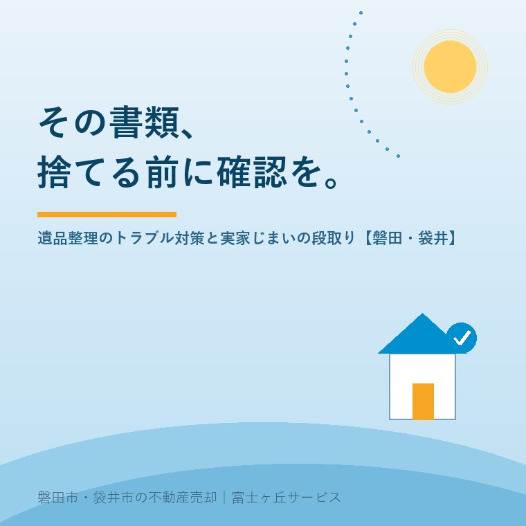

2026年7月27日｜カテゴリ：実家じまい・遺品整理

この記事の要点
Q. 親の家の遺品整理、何から手をつければいい？業者トラブルも心配。
A. 順番は「貴重品・書類の仕分け→形見分け→業者選び→処分」です。業者に頼むときは、料金トラブルが報告されているため、現地を見てもらったうえでの書面見積もりを複数社から取るのが基本です。そして、権利証・売買契約書・通帳などの書類は、後の相続手続きと売却の税金に直結するので絶対に捨てないでください。磐田市・袋井市では、介護施設の運営から不動産事業を始めた富士ヶ丘サービスのような「介護×不動産」専門の会社に、片付けと売却の段取りをセットで相談するという選択肢があります。
実家じまいのご相談で、売却と同じくらい悩みが深いのが「家の中の物」です。磐田市・袋井市の実家は家が大きく、蔵や物置、農機具小屋まであるお宅も多いので、遺品整理はどうしても大仕事になります。そこで頼りになるのが遺品整理業者ですが、一方で契約をめぐるトラブルも報告されており、国民生活センターが繰り返し注意を呼びかけています。今日は、トラブルの実例と業者選びのポイント、そして不動産屋として何より伝えたい「捨ててはいけない書類」の話をします。
国民生活センターに寄せられた相談には、次のような実例があります。
こうしたトラブルを避けるポイントは、①必ず現地を見てもらってから書面で見積もりを取る、②「どんな場合にいくら追加になるか」を事前に確認する、③2〜3社の相見積もりで相場感をつかむ、④残す物のリストを書面で渡し、できるだけ作業に立ち会う、の4つです。また、家庭から出る不用品の収集運搬には市町村の一般廃棄物処理業の許可等が必要です。空車で巡回してくる無許可の回収業者は、高額請求や不法投棄につながるおそれがあるため利用しないでください。困ったときは消費者ホットライン「188」に相談できます。
遺品整理でもっとも取り返しがつかないのが、書類の処分です。古い封筒の束に見えても、その中に実家の売却と相続を左右する紙が入っています。仕分けの前に、次のリストを手元に置いてください。
| 書類 | なぜ大事か |
|---|---|
| 権利証（登記済証）・登記識別情報 | 売却の登記手続きで必要。再発行はできず、紛失すると手続きに手間と費用がかかる |
| 売買契約書・建築請負契約書・領収書 | 売却時の税金を左右する「取得費」の証明。無いと売却額の5％しか取得費にできず、税金が数百万円変わることも |
| 固定資産税の課税明細・納税通知書 | 実家の全体像（未登記建物・複数の土地）を把握する入口 |
| 通帳・証書・保険証券・年金関係 | 相続財産の確定と手続きに必要。解約・凍結手続きの起点 |
| 測量図・境界確認書・建築確認の書類 | 売却時の境界トラブル防止・買主への説明資料になる |
| 遺言書・エンディングノート | 遺産分割の前提。自筆の遺言書は開封せず家庭裁判所の検認へ |
迷ったら「紙類は最後まで捨てない」が鉄則です。段ボール1〜2箱に「書類」とだけ書いてまとめておき、相続手続きと売却が終わってから処分しても遅くありません。
実家を売る方針なら、家の中の物は原則すべて撤去（残置物ゼロ）が基本です。家具が残ったままだと内覧の印象が悪く、「撤去費用分の値引き」を求められることも多いためです。段取りは次の順番が失敗しません。
タイミングにも注意が必要です。遺産分割がまとまる前に家財を処分すると、相続人間のトラブルの火種になります。急ぐ事情がなければ、「誰が実家を引き継ぐか」が決まってから本格的な処分に進むのが安全です。
ご相談でよくいただくのが「まだ片付いていないので、売却の相談は早いですよね」という言葉です。実は逆で、片付けの前にご相談いただくほうがうまくいきます。売るか・貸すか・解体するかで、残置物をどこまで撤去すべきかが変わりますし、書類の仕分けでは「これは捨てないで」を事前にお伝えできます。この地域の広いお宅は物量も多く、処分費用は決して小さくないので、売却代金との収支をセットで考えるのが現実的です。
当社は介護施設の運営から始まった会社として、施設入居や相続で動き出した実家の「片付け・書類・売却」をひとつの段取りに組み立てるお手伝いをしています。遺品整理業者の見積もりの見方や、残すべき書類のチェックもご一緒します。
富士ヶ丘サービスは、磐田市・袋井市に特化した地域密着の会社として、「高く売る」だけでなく「家族が疲れ果てない実家じまい」を大切にしています。片付けの段取りからのご相談は実家じまい相談室へどうぞ。
ふじがおか実家カルテ｜片付けを始める前の全体整理に
残す書類・売り方・段取り。片付けの前に、まず1冊に。
登記情報と固定資産税通知書から実家の全体像を宅建士が机上で確認し、片付け・書類・売却の順番を整理してお渡しします。実家じまい相談室・相続はじめ相談室もあわせてご利用ください。
本記事は2026年7月27日時点の情報をもとに作成しています。遺品整理サービスの契約トラブルは消費者ホットライン「188」または最寄りの消費生活センターへ、相続手続き・遺言書の検認は司法書士・家庭裁判所へご相談ください。
磐田市・袋井市の実家じまい・相続空き家相談
固定資産税通知書だけでも相談できます
住所があいまいでも、通知書や写真から名義・道路・農地・残置物の確認順を整理します。カルテ申込またはLINEで状況を送ってください。
富士ヶ丘サービス株式会社／静岡県磐田市見付5789番地1／TEL:0538-31-3308／静岡県知事 (2) 第14083号／代表取締役・宅地建物取引士 大石 浩之